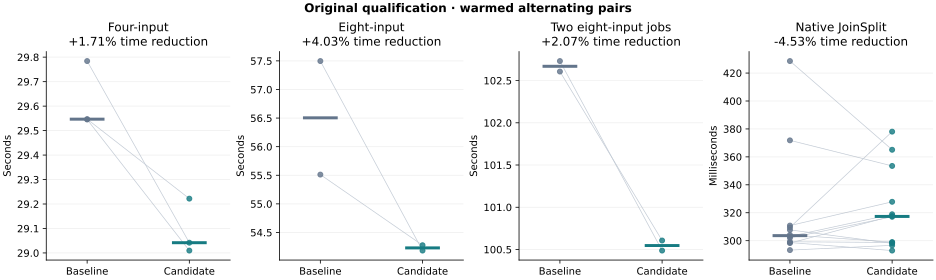
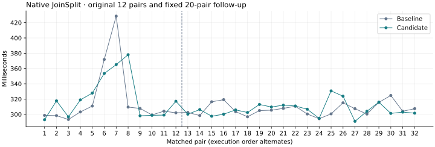

2026-10-21 · Tesla V100-PCIE-32GB · fixed 250 W cap
GPU prover optimization: pass 10
Retained NTT load fusion
Retained for consistent aggregation improvements in all seven paired comparisons: median time reductions of 1.71% for four inputs, 4.03% for eight inputs, and 2.07% for two concurrent eight-input jobs. Matched NTT event time fell 9.42%. Native timings have a small observed cost: the original pooled median was 4.53% slower, the fixed twenty-pair follow-up was essentially flat (+0.09% reduction), and the combined thirty-two-pair median was 0.49% slower (median paired regression 0.45%; 13/32 faster pairs). No native speedup is claimed. Qualification GPU peaks fell by 212 MiB for four inputs and 296 MiB for concurrent jobs, with a 66 MiB increase for single eight-input jobs; all resource budgets passed.
The candidate fuses the first radix-2 butterfly with the global input loads in the shared NTT kernel. One shared-memory round trip and one barrier per eligible tile are removed. A barrier still publishes the twiddle before it is read, and the existing tile barrier publishes butterfly results. The one-stage case and all paths outside the existing V100/shared-NTT guard retain the original algorithm.
45 targeted tests passed; 100 independently CPU-audited outputs contain 232 fresh proofs, including the fixed native follow-up. Proof parameters, verifier, fresh randomness, required GPU stages, resource budgets and launch geometry are unchanged.
Complete-proof timings
Original qualification timings in seconds; the native follow-up is reported separately. Positive reduction means faster. Pooled medians and paired medians are distinct estimators. All prespecified samples are included.


Native follow-up
The original twelve native pairs had a 4.53% slower pooled median, a 0.49% median paired regression, and six faster candidate pairs, with wide timing swings. Before further measurements, a fixed twenty-pair follow-up was specified with unchanged binaries, workload, timers and budgets. Both series and every outlier are retained. The combined row is descriptive, not a replacement for the original qualification.
Resource observations
Sampled peaks across qualification runs, in MiB. Native GPU samples can miss short-lived allocations. Reported zeros do not mean zero actual use.
Matched warm profiles
GPU-event sums are nonadditive and separate from the proof timer. Eight captured profiles have zero dropped events and complete submission metadata.
Experiments and correctness
The initial four-variant screen checked 112 integer-NTT oracle configurations and 26 timed shape/direction configurations, with eight alternating samples per variant after warmup. Load fusion improved 24 of 26 cases; store fusion regressed multiple large cases. Combined fusion was mixed. Only load fusion advanced. The final source was screened again against 56 CPU-oracle configurations and the same 26 timed cases; it improved 24 of 26, with a median 4.54% reduction.
The earliest load-fusion prototype read its shared twiddle before publication. An integer oracle detected this at 1,024 rows and width 55 before performance measurements. The failed source and diagnostic remain in the evidence. The corrected kernel explicitly synchronizes before that read. Five fallback macro configurations preprocess token-identically to the original source.
Small CPU NTT oracles were cross-checked with direct DFT sums. Large screens compared every output field element. Targeted tests also cover noncanonical field representatives, shared-memory admission and fallbacks, in-place stages, forward/inverse transforms, scaling, bit-reversed output, commitments, witness execution and native wallet verification. CPU-only and GPU-without-tuning compatibility checks passed.
Measurement boundaries
- Four-input aggregation: Aggregation call plus GPU drain; excludes context initialization, output and CPU audit.
- Eight-input aggregation: Cohort launch through worker exit; includes initialization, barrier, aggregation, output and shutdown; excludes CPU audit.
- Two concurrent eight-input jobs: Cohort launch through last of two worker exits; includes both initializations, barriers, aggregation, output and shutdown; excludes CPU audits.
- Native JoinSplit: Native ABI proving call plus GPU drain; excludes initialization, buffer setup, output and CPU audit.
Original qualification paired proof timings
Scope and limits
- One Tesla V100-PCIE-32GB, fixed aggregation fixtures, fixed resource budgets and unchanged 250 W cap.
- Three four-input pairs, two single eight-input pairs, two concurrent pairs and twelve original native pairs, followed by twenty prospective native pairs; limited sample counts.
- Warm alternating pairs; first-use profiles and warmups retained and excluded from qualification medians.
- Both pooled median and within-pair reductions reported; short native calls are sensitive to timing variation.
- Event totals and inclusive host spans are nonadditive. Uncovered intervals do not establish GPU idle time.
- Sampling can miss short-lived native GPU allocations; a sampled zero is not zero actual VRAM.
- No cold-cache, Apple GPU, full-block or production qualification.
Only src/gpu/ntt_cached.cl differs in the evaluated candidate. All 691 source files are pinned against its release and test builds. Previous campaign evidence is preserved.
References and reproducibility
NVIDIA's guidance informed the shared-memory and synchronization investigation; the benchmark results determine retention.
Structured evidence · Candidate patch · Integrity manifest